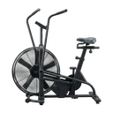

Air Bike
A full-body conditioning exercise on the air bike, combining pedaling with an arm push-pull for sustained power output.
Full body · Air Bike · Intermediate

Muscles worked by the Air Bike
Primary
Secondary
Also called: hamstring, hamstrings, posterior thigh, biceps femoris, quad, quads.
Equipment

Air BikeAlso called: assault bike, fan bike, rogue echo bike, schwinn airdyne.
How to do the Air Bike
- Sit on the air bike and grip the moving handles.
- Place your feet on the pedals and brace your core.
- Push and pull the handles while pedaling at a steady pace.
- Drive with both arms and legs to maintain power output.
- Continue for the desired duration or distance.
Form tips
- Keep your torso upright and avoid slumping over the handles.
- Breathe rhythmically to sustain effort over longer intervals.
- Pull the handles with your back, not just your arms.
At a glance
| Body part | Full body |
|---|---|
| Category | Cardio |
| Force type | Push |
| Mechanic | Compound |
| Difficulty | Intermediate |
| Equipment | Air Bike |
| Goals | Hypertrophy, Strength |
| Tags | Lower back safe, Shoulder safe, No axial load, Knee safe |
| MET | 8.0 (metabolic equivalent, for calorie estimates) |
| Unilateral | No |
| Bodyweight | No |
| Dataset id | air-bike |
Air Bike in German & Spanish
| German | Air Bike |
|---|---|
| Spanish | Bicicleta de Aire |
Descriptions, instructions and tips ship in all three languages in the JSON.
Related exercises
Exercise data (JSON)
The record below is exactly what exercises.json ships for this exercise — names, descriptions, instructions and tips in English, German and Spanish.
{
"id": "air-bike",
"name_en": "Air Bike",
"name_de": "Air Bike",
"name_es": "Bicicleta de Aire",
"description_en": "A full-body conditioning exercise on the air bike, combining pedaling with an arm push-pull for sustained power output.",
"description_de": "Eine Ganzkörperübung auf dem Air Bike, bei der die Griffe gedrückt und gezogen werden, während die Beine in die Pedale treten.",
"description_es": "Un ejercicio de cuerpo completo en bicicleta de aire que combina el empuje y la tracción de los brazos con el pedaleo continuo.",
"category": "cardio",
"force_type": "push",
"mechanic": "compound",
"difficulty": "intermediate",
"equipment": "air_bike",
"body_part": "full_body",
"primary_muscles": [
"hamstrings",
"quadriceps"
],
"secondary_muscles": [
"gluteus_maximus",
"latissimus_dorsi",
"pectoralis_major",
"rectus_abdominis"
],
"goals": [
"hypertrophy",
"strength"
],
"tags": [
"lower_back_safe",
"shoulder_safe",
"no_axial_load",
"knee_safe"
],
"variation_group": "cardio",
"is_unilateral": false,
"is_bodyweight": false,
"instructions_en": [
"Sit on the air bike and grip the moving handles.",
"Place your feet on the pedals and brace your core.",
"Push and pull the handles while pedaling at a steady pace.",
"Drive with both arms and legs to maintain power output.",
"Continue for the desired duration or distance."
],
"instructions_de": [
"Setze dich auf das Air Bike und greife die beweglichen Lenker.",
"Stelle deine Füße auf die Pedale und spanne den Rumpf an.",
"Drücke und ziehe die Lenker, während du in gleichmäßigem Tempo trittst.",
"Setze Arme und Beine gleichzeitig ein, um die Leistung aufrechtzuerhalten.",
"Fahre für die gewünschte Dauer oder Distanz fort."
],
"instructions_es": [
"Siéntate en la bicicleta de aire y sujeta los manillares móviles.",
"Coloca los pies en los pedales y contrae el core.",
"Empuja y jala los manillares mientras pedaleas a un ritmo constante.",
"Impulsa con brazos y piernas para mantener la potencia.",
"Continúa durante la duración o distancia deseada."
],
"tips_en": [
"Keep your torso upright and avoid slumping over the handles.",
"Breathe rhythmically to sustain effort over longer intervals.",
"Pull the handles with your back, not just your arms."
],
"tips_de": [
"Halte den Oberkörper aufrecht, statt den Rücken einzurunden.",
"Atme gleichmäßig weiter und halte die Luft nicht an.",
"Lass die Schultern locker, statt sie zu den Ohren zu ziehen."
],
"tips_es": [
"Mantén las rodillas alineadas con los pedales al pedalear.",
"Evita encorvar la espalda cuando aumente la fatiga.",
"Respira de forma rítmica para sostener la potencia."
],
"met": 8.0,
"images": {
"flat": {
"main": "images/flat/air-bike-main.webp"
}
}
}Fetch just this exercise
const { exercises } = await fetch(
"https://exercise-dataset.com/exercises.json"
).then(r => r.json());
const ex = exercises.find(e => e.id === "air-bike");Free for personal and commercial in-app use with attribution (“Exercise data by RepDB”) — see the license and ready-made attribution snippets. Redistributing the data as a dataset or API is not permitted.